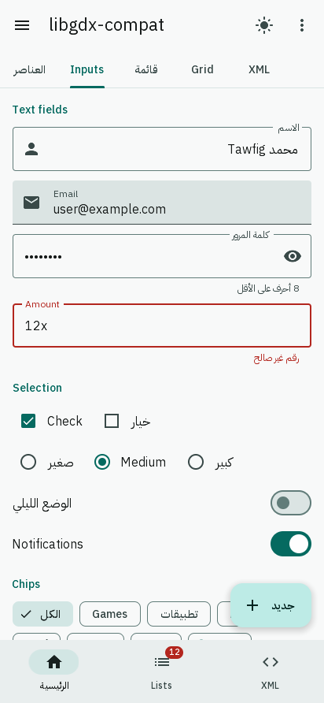
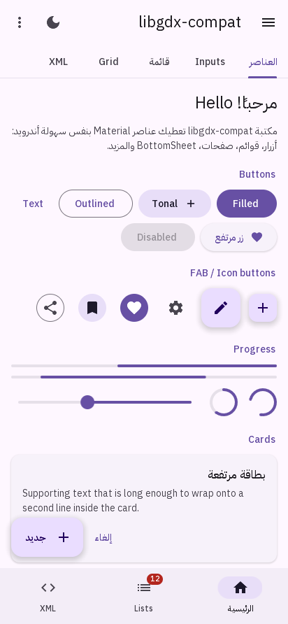
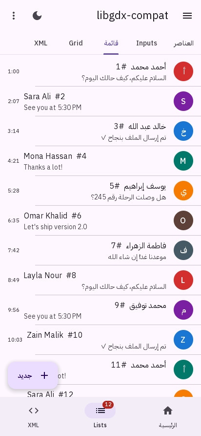

libgdx-compat
libgdx-compat Theming, typography & RTL#
The theme#
Compat.theme holds the Material 3 colour roles. Widgets keep references to these Color objects, so changing them restyles the whole UI immediately, with no rebuild.


Compat.theme.set(Theme.dark()); // baseline dark scheme
Compat.theme.set(Theme.light());
Compat.theme.set(Theme.fromSeed(Color.valueOf("00897B"), false)); // full scheme from one brand colour
Compat.theme.primary.set(Color.valueOf("E65100")); // change one role
Use Compat.init(config) with config.dark = true to start in dark mode.
Colour roles#
| Group | Roles |
|---|---|
| Primary | primary, onPrimary, primaryContainer, onPrimaryContainer |
| Secondary | secondary, onSecondary, secondaryContainer, onSecondaryContainer |
| Tertiary | tertiary, onTertiary, tertiaryContainer, onTertiaryContainer |
| Error | error, onError, errorContainer, onErrorContainer |
| Surfaces | background, onBackground, surface, onSurface, surfaceVariant, onSurfaceVariant |
| Containers | surfaceContainerLowest, surfaceContainerLow, surfaceContainer, surfaceContainerHigh, surfaceContainerHighest |
| Outlines | outline, outlineVariant |
| Inverse | inverseSurface, inverseOnSurface, inversePrimary |
| Other | scrim, shadow |
Look roles up by name with Compat.theme.color("onSurfaceVariant") (snake_case works too).
Color object itself (setBackground(Compat.theme.surface)) rather than a copy, so the view follows theme changes.Shapes#
Corner sizes in dp: cornerExtraSmall (4), cornerSmall (8), cornerMedium (12), cornerLarge (16), cornerExtraLarge (28). Cards, dialogs, sheets and menus read them.
Typography#
| Constant | Size (sp) | Weight |
|---|---|---|
DISPLAY_SMALL |
36 | regular |
HEADLINE_MEDIUM |
28 | regular |
HEADLINE_SMALL |
24 | regular |
TITLE_LARGE |
22 | regular |
TITLE_MEDIUM |
16 | medium |
TITLE_SMALL |
14 | medium |
BODY_LARGE |
16 | regular |
BODY_MEDIUM |
14 | regular |
BODY_SMALL |
12 | regular |
LABEL_LARGE |
14 | medium |
LABEL_MEDIUM |
12 | medium |
LABEL_SMALL |
11 | medium |
Change Typography.SIZE[...] and Typography.MEDIUM[...] before building the UI to adjust the scale.
Fonts#
The bundled font is IBM Plex Sans Arabic (Latin + Arabic) in two weights. Glyphs are rasterised on demand, only for the characters and sizes you actually use, so there is no character list to maintain.
Compat.Config config = new Compat.Config();
config.regularFont = Gdx.files.internal("fonts/Tajawal-Regular.ttf");
config.mediumFont = Gdx.files.internal("fonts/Tajawal-Medium.ttf");
Compat.init(config);
Arabic and right-to-left#


Every text component shapes Arabic letters (initial, medial and final forms, lam-alef ligatures) and reorders mixed Arabic / Latin / numbers automatically. A paragraph that starts with Arabic aligns to the right by itself.
To mirror the whole interface, enable RTL before building it:
Compat.Config config = new Compat.Config();
config.rtl = true; // or Compat.setRtl(true) before creating views
Compat.init(config);
In RTL mode rows run right to left, START/END gravities and margins flip, the drawer opens from the right, tabs and pagers swipe the other way, and text fields put their icons on the mirrored sides.
Limitations: diacritics (harakat) are centred over their letter approximately because libGDX cannot read a font's mark positioning tables, and other complex scripts (Devanagari, Thai …) are not shaped.